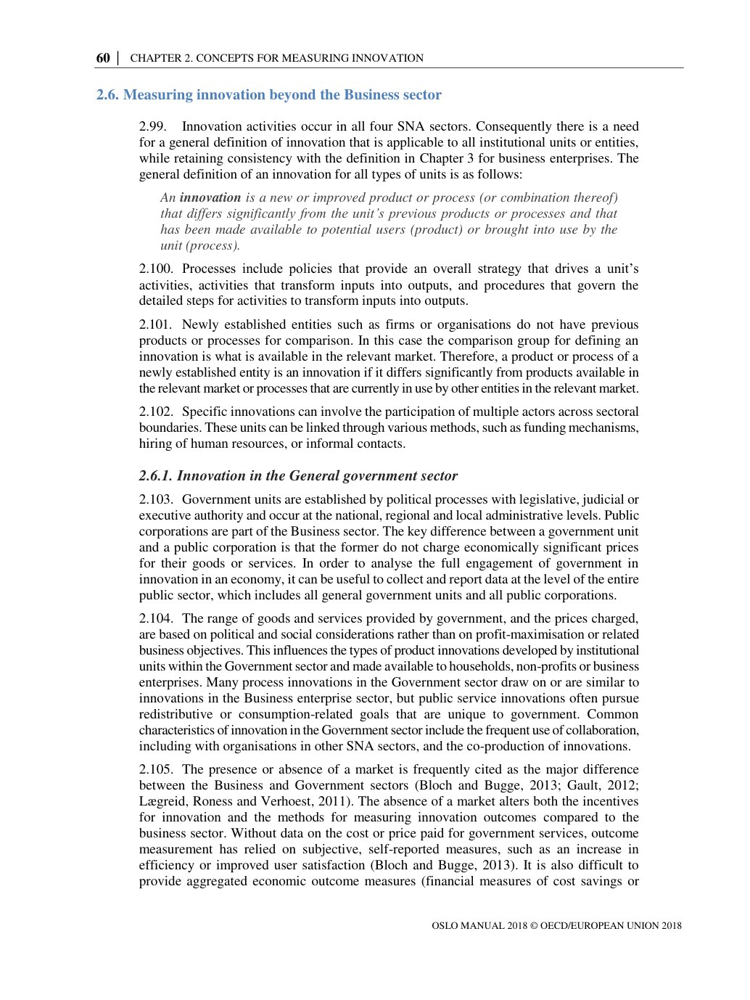
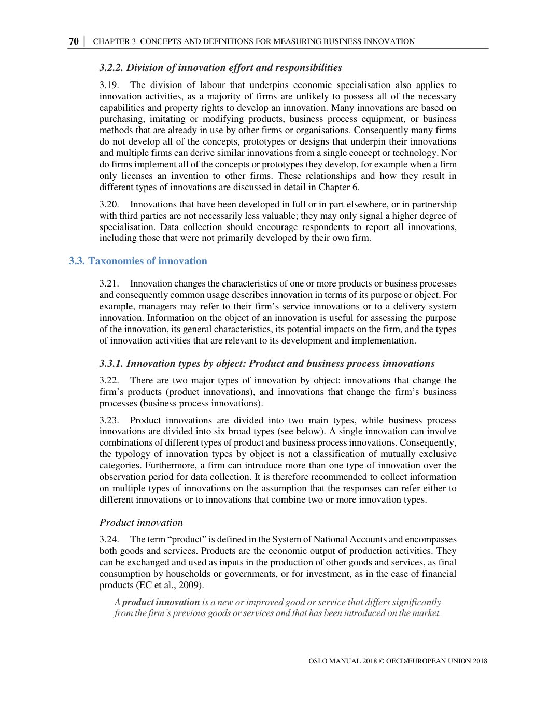
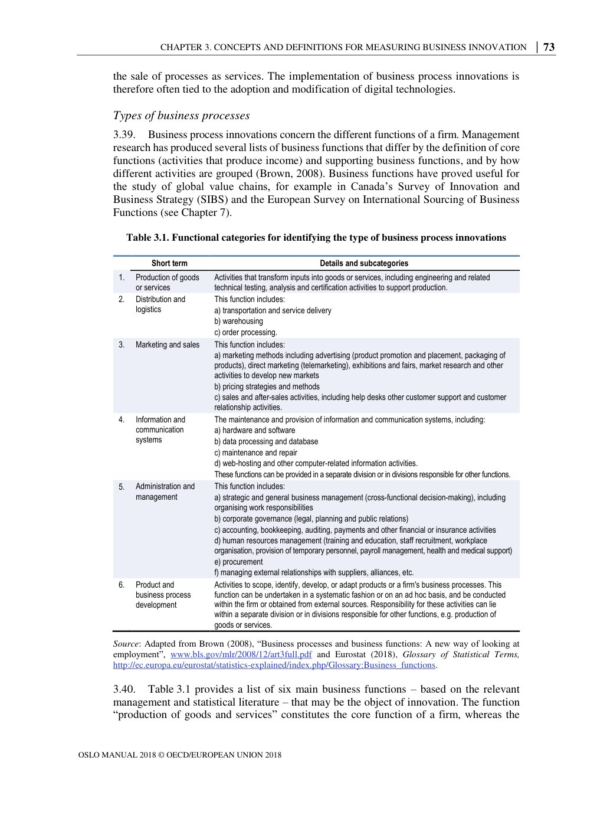
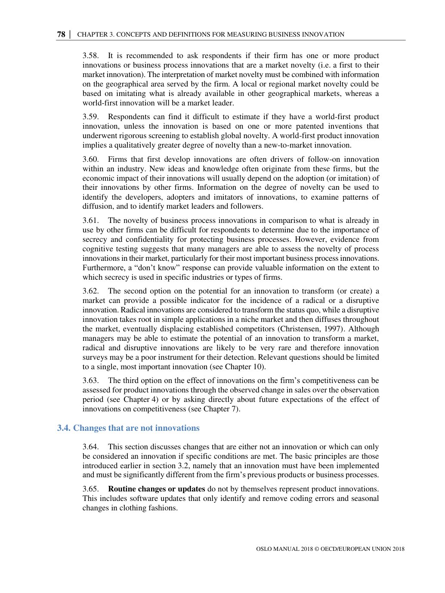
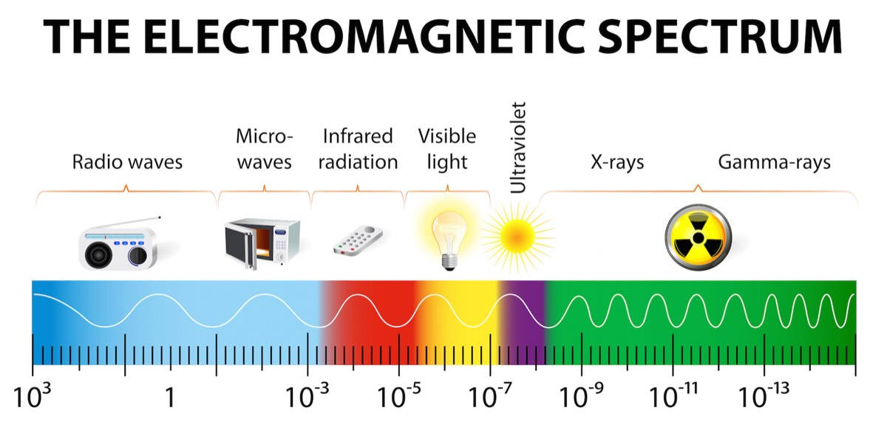
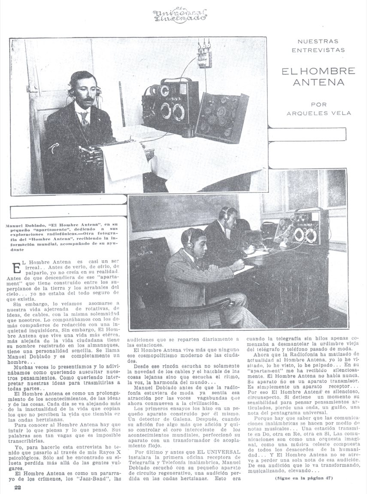
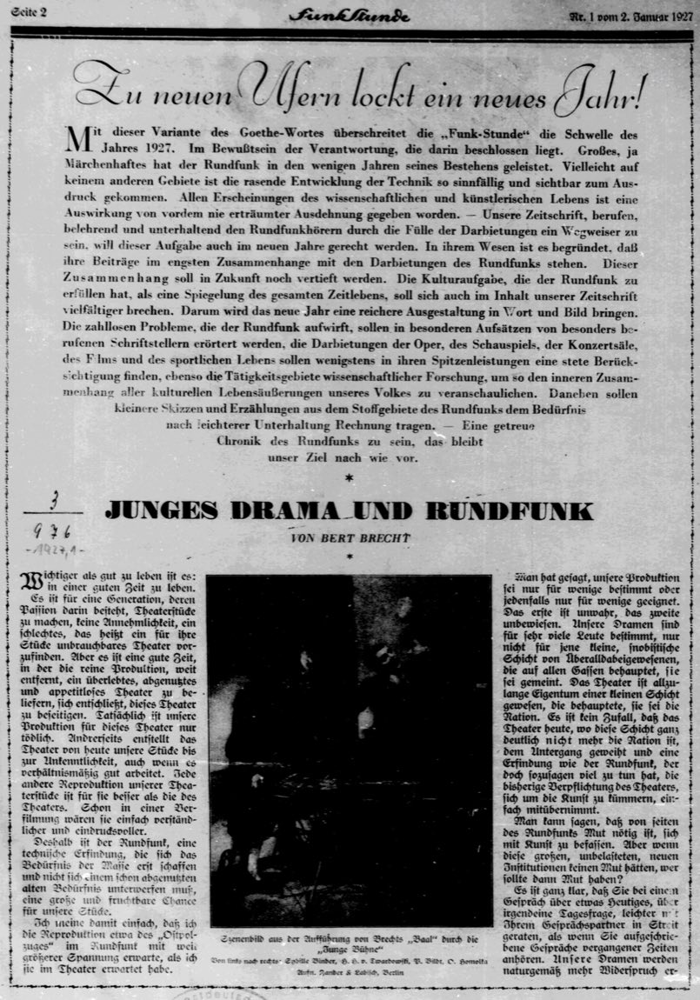
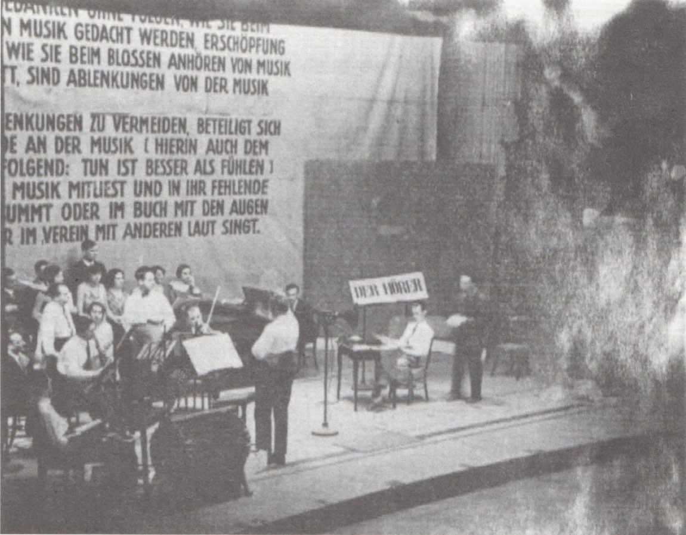

01 · Una unidad
Alguien la introdujo
Tiene que haber una unidad identificable —una empresa, un gobierno, una organización— a la que atribuirle la innovación. Sin sujeto, no hay dato.
Sesión 02 · Martes 25 de agosto · Salón C-102 · Unidad 1
Hoy vamos a hacer algo incómodo: buscarle el autor a cuatro cosas que usas todos los días y no encontrarlo. Primero necesitamos ponernos de acuerdo en qué estamos buscando.
SEMINARIO DE NEGOCIOS INTERNACIONALES III · FCA UNAM · GRUPO 1746 · 2027-1
DR. JORGE CARDIEL HERRERA
Parte I · Primero, la regla
El Manual de Oslo es el acuerdo internacional sobre qué cuenta como innovación y cómo se mide. Lo publican la OCDE y Eurostat; la edición vigente es la cuarta, de 2018.
No es un libro de teoría: es el instructivo con el que los países levantan sus encuestas de innovación. Cuando lees que «México innova menos que Corea», alguien aplicó este manual para poder decirlo.
Y eso lo vuelve más interesante, no menos: para medir algo hay que decidir antes qué es. Esa decisión está escrita y podemos discutirla.
Tu lectura
Capítulos 2 y 3 — «Conceptos para medir la innovación» y «Conceptos y definiciones para medir la innovación empresarial».
4.ª edición · 258 páginas · OCDE / Eurostat, 2018. La primera edición es de 1992 y llevaba solo innovación tecnológica: hicieron falta 26 años para que el manual aceptara que también se innova sin tecnología.
Parte I · Manual de Oslo, §2.99 · pág. 60

Una innovación es un producto o proceso nuevo o mejorado (o una combinación de ambos) que difiere significativamente de los productos o procesos previos de la unidad y que ha sido puesto a disposición de usuarios potenciales (producto) o puesto en uso por la unidad (proceso). Manual de Oslo 2018, §2.99
Léela otra vez y subraya las tres exigencias. Están todas en esa sola frase, y cada una va a estorbarnos hoy.
Parte I · Lo que la definición te obliga a poder decir
01 · Una unidad
Tiene que haber una unidad identificable —una empresa, un gobierno, una organización— a la que atribuirle la innovación. Sin sujeto, no hay dato.
02 · Una diferencia
No basta con que sea distinto: tiene que serlo de manera significativa respecto a lo anterior de esa misma unidad. Quién decide qué es significativo es otra pregunta.
03 · Un momento
La idea no cuenta. El prototipo tampoco. Cuenta cuando se pone a disposición de usuarios o se pone en uso. Eso implica que hay una fecha.
Un sujeto, una diferencia, una fecha. Guarda las tres: en un rato vamos a buscarlas en tres objetos reales y no van a aparecer.
Parte I · Manual de Oslo, §3.3 · págs. 70—77

Innovación de producto
Un bien o servicio nuevo o mejorado que difiere significativamente de los anteriores de la empresa y que se ha introducido en el mercado.
Innovación de proceso de negocio
Un proceso nuevo o mejorado para una o más funciones de la empresa, que difiere significativamente de los anteriores y que se ha puesto en uso.
La 4.ª edición redujo a dos las cuatro categorías de 2005 (producto, proceso, organizacional y de mercadotecnia). Lo organizacional y lo comercial ahora son procesos de negocio.
Parte I · Manual de Oslo, Tabla 3.1 · pág. 73

Fíjate en algo: cinco de las seis no son técnicas. Una empresa puede innovar sin tocar un aparato. Guárdalo para cuando clasifiques tu objeto.
Parte I · Manual de Oslo, §3.4 · pág. 78

Reemplazar o ampliar equipo idéntico al que ya tenías.
Actualizaciones de rutina y mantenimiento normal.
Cambios solo de precio, estacionales o cíclicos.
Personalizar un producto para un cliente sin que difiera significativamente de lo que ya hacías.
Y el que más duele: trabajo en curso. Si todavía no se puso en uso, no existe para el manual.
Parte I · Antes de seguir
El Manual de Oslo hace bien su trabajo: sirve para llenar una encuesta y comparar países. Pero para llenarla necesitas un sujeto, una diferencia y una fecha.
La pregunta de hoy
¿Qué pasa cuando agarras un objeto real —el que escribiste en tu radar— y tratas de contestar esas tres cosas?
Vamos a intentarlo con cuatro: el auto eléctrico, el smartphone, la inteligencia artificial y la radio. Los cuatro se dejan medir por el manual y ninguno se deja atribuir.
Parte II · Primer objeto
El auto eléctrico no es una tecnología del futuro que por fin llegó. Es una tecnología del siglo XIX que ganó, perdió y volvió.
Parte II · El auto eléctrico
Producción en cadena y precio a la baja. Un eléctrico costaba el doble o el triple.
Charles Kettering inventa el motor de arranque y elimina la manivela. La principal ventaja del eléctrico —que arrancaba solo— se la quedó el de gasolina.
Spindletop, Texas. La gasolina se vuelve más barata que la electricidad en casi todo el país.
Se conectan las ciudades. Ahora importa la autonomía, y ahí el eléctrico no competía.
Ninguna de estas cuatro cosas es una falla del auto eléctrico. Perdió por lo que pasó alrededor, no por lo que era.
Parte II · El auto eléctrico
Fíjate quién aparece en esta lista: una ley de California, una batería hecha para otra cosa y una empresa de cámaras. Nada de esto sale del departamento de innovación de una armadora.
Parte II · Segundo objeto
Trece años de teléfonos inteligentes antes del teléfono inteligente. Y el cambio de verdad no fue 2007: fue 2008, cuando abrió la App Store —que no es un aparato, es un proceso de negocio.
Parte II · El smartphone
| La pieza | Quién y cuándo |
|---|---|
| Pantalla capacitiva | E. A. Johnson, Royal Radar Establishment, Reino Unido, 1965 — control aéreo |
| Multitáctil | Bell Labs y la Universidad de Toronto en los ochenta; FingerWorks, comprada por Apple en 2005 |
| Batería de litio | Whittingham, Goodenough y Yoshino — Nobel de Química 2019; Sony la vende desde 1991 |
| Procesador ARM | Acorn Computers, Cambridge, 1985 — para una computadora escolar |
| GPS | Departamento de Defensa de EE. UU.; abierto al uso civil en los noventa |
| La web | Tim Berners-Lee, CERN, 1989 — un laboratorio público, liberada sin patente |
| Red celular | Bell Labs, concepto de 1947; primera red comercial en Japón, 1979 |
Lo que Apple hizo —y no es poco— fue integrarlas y decidir el modelo de negocio. Según el Manual de Oslo eso sí es una innovación. Pero entonces la innovación no fue inventar nada.
Parte II · Tercer objeto · el que 32 de ustedes escribieron
Dos veces se dio por muerta, con presupuestos cancelados y gente cambiando de carrera. «Invierno de la IA» es el nombre que le pusieron ellos mismos, y lo usaban con miedo: significaba que ya había pasado antes.
Parte II · La inteligencia artificial
Todo lo que hoy llamamos IA —incluido el GPT que algunos de ustedes usan para estudiar— se entrena con un procedimiento llamado retropropagación: comparar lo que la red predijo con lo correcto y repartir el error hacia atrás para corregir cada conexión.
1970 · Helsinki
Lo describe en su tesis de maestría, como un método general de cálculo. No menciona redes neuronales ni una sola vez.
1974 · Harvard
Lo aplica a redes neuronales en su tesis doctoral, en pleno primer invierno. Casi nadie la lee: el campo estaba desprestigiado.
1986 · Nature
Lo publican otra vez, y esta vez sí. No porque fuera nuevo, sino porque llegó en el momento en que alguien podía escucharlo.
Y aun después de 1986 no sirvió de gran cosa durante otros veinticinco años. El algoritmo estaba completo. Lo que faltaba estaba afuera.
Parte II · La inteligencia artificial
ImageNet, 2009: catorce millones de imágenes etiquetadas a mano, por trabajadores pagados por tarea. Sin ese trabajo invisible, no hay entrenamiento.
En 2012, AlexNet gana el concurso de ImageNet entrenando en dos tarjetas gráficas de videojuegos. El hardware que destrabó la IA se había construido para renderizar juegos.
2017: ocho investigadores de Google publican el Transformer. La T de GPT viene de ahí. Cinco años después, ChatGPT.
Aplícale las tres exigencias del Manual de Oslo
¿Cuándo se introdujo la IA generativa? 1970, cuando se describió el algoritmo. 1974, cuando se aplicó a redes. 1986, cuando la comunidad lo aceptó. 2012, cuando por fin funcionó. 2017, con el Transformer. 2022, cuando pudiste usarla desde el navegador. Seis fechas defendibles, y la encuesta te deja escribir una.
En 2018 Bengio, Hinton y LeCun reciben el premio Turing; en 2024 Hinton comparte el Nobel de Física. Los premios llegaron entre treinta y cincuenta años después del trabajo, y nunca alcanzan para todos.
Parte II · Cierre
01
Todo lo que parece nuevo lleva décadas existiendo en otro tamaño, otro precio o para otra cosa.
02
Se abandona y vuelve. El auto eléctrico ganó en 1900, murió en 1912 y regresó en 2008. La IA se murió dos veces. Nada obligaba a ese orden.
03
La innovación que cambia el mercado suele ser un arreglo nuevo de piezas viejas, más una forma de cobrarlas.
04
«2007» no es un hecho: es una elección sobre dónde cortar. Igual que «2022» para la IA, que podría ser 1970. La fecha la pone quien cuenta la historia.
Parte III · Tercer objeto
Mandar cualquier señal sin cable.
Puntos y rayas por el aire. Barcos, ejércitos.
La voz, de uno a uno.
Mover máquinas a distancia. Tesla lo demuestra en 1898.
De uno a muchos, sin saber quién escucha.
Lo que se hace con el sonido cuando ya existe todo lo anterior.
Cada una aparece en un momento distinto, con gente distinta y para clientes distintos. Preguntar «quién inventó la radio» es preguntar por seis cosas a la vez.
Parte III · La radio

Las ondas de radio no las hizo nadie: ya estaban ahí. Maxwell las dedujo en el papel en 1873 y Hertz las produjo en el laboratorio en 1887 sin imaginar para qué servían —dijo que no tenían «ninguna utilidad».
Lo que sí se inventa es el aparato que las genera y las capta, y sobre todo el uso. Y el uso no venía en la física.
Por eso el espectro es hoy un asunto de Estado: si el medio no se inventa, lo único que se puede repartir es el permiso para usarlo. Eso es una concesión, y es política.
Parte III · La radio
Parte III · La atribución
Marconi. Patentó, montó la empresa y ganó el Nobel en 1909.
Popov. Hay un día nacional de la radio el 7 de mayo por él.
Bose. Llegó antes y se negó a patentar.
Hertz y Braun. Braun compartió el Nobel con Marconi.
1943 · Corte Suprema de EE. UU.
En Marconi Wireless Telegraph Co. v. United States la Corte anula las reclamaciones centrales de la patente de Marconi, reconociendo trabajo previo de Lodge, Tesla y Stone. Marconi llevaba dos años muerto.
1934 · De Forest contra Armstrong
Veinte años de pleito por el circuito regenerativo. La Corte le da la razón a De Forest; los ingenieros siguieron dándosela a Armstrong y su gremio se negó a retirarle la medalla.
La ley tuvo que decidir quién inventó la radio porque los hechos no alcanzaban para decidirlo. Y decidió dos veces distinto.
Parte III · La radio · 1920—1938
Ninguna de estas ocho funciones estaba en el aparato de 1895. Se las fuimos poniendo, y cada capa trajo su propia disputa por quién controla el permiso.
Parte III · La radio en México

Manuel Doblado armó su receptor en un cuarto pequeño: primero un detector de galena, después un circuito regenerativo. No trabajaba para nadie.
En 1921 Constantino de Tárnava transmite desde Monterrey; en 1923 nace CYL, La Casa del Radio, del propio El Universal Ilustrado. La ley de la radio en México llega después, corriendo detrás de lo que ya pasaba.
Los que hicieron la radio mexicana fueron aficionados, un periódico y unos poetas, todos antes de que hubiera una industria a la que atribuirle nada.
Parte III · Alemania, 1927—1932


La radio debería transformarse de aparato de distribución en aparato de comunicación: sería el más formidable si supiera no solo emitir, sino también recibir; no solo hacer escuchar al oyente, sino ponerlo a hablar. Bertolt Brecht, «La radio como aparato de comunicación», 1932
Brecht escribe esto mientras se estaba decidiendo qué iba a ser la radio. No es una crítica tardía: es una propuesta que perdió.
Parte III · Brecht, 1932
Nuestra tarea no es de ninguna manera renovar los cimientos ideológicos a través de innovaciones sobre la base del orden social dado, sino que, a través de nuestras innovaciones, tenemos como tarea hacer temblar su fundamento. Entonces, ¡por las innovaciones, contra las renovaciones! Bertolt Brecht · «Der Rundfunk als Kommunikationsapparat», julio de 1932
Compárala con el Manual de Oslo
Para el manual, una innovación «difiere significativamente» de lo anterior de la misma unidad. Para Brecht, una innovación que no incomoda a nadie es una renovación: cambia el producto y deja el orden intacto. Son dos varas distintas para medir la misma palabra, y las dos siguen en uso.
Parte III · México, 1924
A precios reducidos
para ancianos y niños
también vendemos leves redecillas
para irse a recorrer las nubes
cazando los átomos de éter que rondan
zumbando palabras humanas […]
Por cien centavos tendréis orejas eléctricas
y podréis pescar los sonidos que se mecen
en la hamaca kilométrica de las ondas
… IU IIIUUU IU … Kyn Taniya, «Radio: poema inalámbrico en trece mensajes», 1924
Luis Quintanilla escribe esto cuando en México casi nadie tenía un aparato. La innovación ya estaba pasando en la cabeza de la gente antes de estar en el mercado —y eso el manual no lo puede contar.
Parte IV · Una innovación que no se copia
El primer teléfono del mundo no servía para nada. El segundo lo volvió útil, y cada aparato nuevo aumentó el valor de todos los anteriores. A eso se le llama efecto de red: el producto vale por la gente que ya está adentro, no por lo que hace.
Aquí la copia deja de funcionar como competencia. Puedes construir una red social técnicamente mejor —más rápida, más privada, más bonita— y perder de todos modos, porque le falta lo único que importa: los demás.
Y fíjate en la trampa para el Manual de Oslo: esa ventaja no es un producto ni un proceso. No se inventó, no se introdujo en una fecha y no está en el aparato. Se acumuló.
Tu radio funciona igual si eres el único que la enciende. Por eso el poder de la radio nunca estuvo en los oyentes: estuvo en el permiso para transmitir, que es escaso y lo reparte el Estado.
Aquí no hace falta que nadie reparta nada. La concentración se produce sola: quien llega primero y crece, gana.
Parte IV · El candado
Cory Doctorow lo dice sin rodeos: el negocio de una plataforma madura no es hacer un producto mejor, sino subir el costo de irte. Tus contactos, tus años de publicaciones, tus reseñas, tus seguidores, tu historial: todo se queda del otro lado de la puerta.
Primero
La plataforma es buena contigo. Te trae todo gratis, sin anuncios, y te muestra lo que pediste.
Después
Ya no te puedes ir. Ahora es buena con quien le paga: los anunciantes y los vendedores.
Luego
Tampoco ellos se pueden ir. La plataforma se queda con el valor de los dos lados.
Y entonces
Queda una cáscara que la gente sigue usando porque no tiene a dónde llevarse a sus amigos.
Doctorow le puso un nombre grosero a este ciclo —enshittification— y en 2023 se volvió palabra del año en inglés. Su remedio no es moral: es técnico y legal. Se llama interoperabilidad, y quiere decir poder llevarte tus datos y tus contactos a otro lado, aunque a la plataforma no le guste.
Parte IV · Noventa años de distancia
1932
La radio debería transformarse de aparato de distribución en aparato de comunicación: sería el más formidable si supiera no solo emitir, sino también recibir. Bertolt Brecht
2023
Las plataformas te dejan hablar, pero no te dejan llevarte a quien te escucha. El candado no está en el mensaje: está en la salida. La tesis de Cory Doctorow, en corto
Brecht escribía cuando todavía se estaba decidiendo qué sería la radio, y perdió. La pregunta para ustedes es si lo que usan hoy ya se decidió o todavía se está decidiendo, porque de eso depende que discutirlo sirva de algo.
Parte V · Una respuesta contemporánea
Durante un siglo la respuesta fue la patente: un nombre, una fecha, un dueño. Ya vimos lo que pasa cuando la realidad no cabe ahí —dos juicios y cuatro países con cuatro inventores distintos—, y acabamos de ver que hay ventajas que ni siquiera son un invento: son un candado.
La otra respuesta
El software libre no resuelve la ambigüedad: la asume y la hace pública. La licencia dice qué puedes hacer con esto; el historial dice exactamente quién escribió cada línea y cuándo. La autoría deja de ser un nombre y se vuelve una lista con fechas.
Parte V · Primer ejemplo
Lo empezó Fabrice Bellard en el año 2000, solo y con seudónimo. Hoy lo mantienen cientos de personas y acumula más de veinte años de historial público.
Es la navaja suiza del video: convierte, corta, comprime y reproduce casi cualquier formato que exista. Está adentro de YouTube, VLC, Chrome, los servicios de streaming y buena parte de las apps con las que grabas o ves video.
Si hoy viste un video en una pantalla, es muy probable que ffmpeg estuviera en el camino.
Aplícale el Manual de Oslo
¿Qué unidad lo introdujo? Ninguna: no es una empresa.
¿En qué fecha? Sale una versión nueva cada pocos meses desde hace veinte años.
¿Producto o proceso? Para ti es un proceso invisible; para Netflix es infraestructura; para nadie es un producto que se venda.
Parte V · Segundo ejemplo
Septiembre 2022
Saca Whisper, que transcribe voz en decenas de idiomas, y libera el código y los pesos con licencia MIT: puedes usarlo, modificarlo y venderlo.
Meses después
Georgi Gerganov reescribe el motor en C++ —whisper.cpp— y lo hace correr en una laptop sin tarjeta gráfica, y hasta en un teléfono. No trabaja en OpenAI.
Hoy
Versiones más rápidas, versiones que separan voces, versiones afinadas para el español de México. Cada una con sus propios autores.
Y aun así hay un hueco: OpenAI publicó el código y los pesos, pero no los datos con que lo entrenó —cientos de miles de horas de audio de internet, de gente que no supo que estaba participando. La atribución es pública hasta donde alguien decidió que lo fuera.
Parte V · Cierre
Nadie escribe un programa entero. Un archivo AUTHORS con miles de nombres es una forma honesta de decir lo mismo que vimos con la radio.
El historial guarda quién cambió qué línea y en qué fecha. Es lo que la historia de la radio no tuvo, y por eso hicieron falta juicios.
ffmpeg no le factura a nadie y sostiene una industria de miles de millones. El manual mide lo que se vende; esto no se vende.
Publicar bajo licencia libre también es una decisión estratégica de empresas grandes: regalar la pieza y quedarse con la plataforma. Es exactamente el candado del que hablábamos hace un momento, solo que con la puerta pintada de otro color.
Cierre · De vuelta a tu radar
En la sesión pasada escribiste un objeto que usas todos los días. Veinte de ustedes escribieron «celular»; seis, «audífonos». Tómalo y contesta las tres exigencias del Manual de Oslo.
La unidad
¿Qué empresa lo introdujo? ¿La que lo diseñó, la que lo ensambló o la que hizo el chip?
La diferencia
¿Respecto a qué es «significativamente» distinto? ¿Al modelo anterior, o a no tener uno?
La fecha
¿Cuándo se puso en uso? Y si tuvieras que defender esa fecha, ¿con qué?
Si no puedes fijar un nombre ni una fecha, eso también es una respuesta —y es la que hemos estado buscando toda la sesión.
Cierre · Lo que sigue
Actividad 1 · en Moodle
Capítulos 2 y 3, control de lectura de una página con una cita en APA 7, y la clasificación de tu objeto: ¿producto o proceso?
Con lo de hoy, agrégale dos líneas más: quién lo introdujo y cuándo. Si no lo encuentras, escribe hasta dónde llegaste buscando.
Lo que ya está publicado
El radar del grupo con los 39 radares de la sesión 01, en la página del curso.
Una pista
Busca tu objeto en Wikipedia y baja hasta «Historia». Casi siempre hay una disputa de fechas ahí, escrita en voz bajita.
SEMINARIO DE NEGOCIOS INTERNACIONALES III · FCA UNAM · GRUPO 1746 · 2027-1
Cierre · De dónde salió esto
OCDE / Eurostat (2018). Oslo Manual 2018: Guidelines for Collecting, Reporting and Using Data on Innovation, 4.ª ed. OECD Publishing, París. Recortes de las págs. 60, 70, 73 y 78.
Cardiel Herrera, J. Apertura de un medio y formación de dispositivo: radiofonía, vanguardismo y poder durante las décadas de 1920 y 1930. Imágenes de archivo de El Universal Ilustrado, Funk-Stunde, Berliner Börsen-Courier y la puesta de Baden-Baden, 1929.
Brecht, B. «Der Rundfunk als Kommunikationsapparat» (1932) y «Junges Drama und Rundfunk» (1927). Kyn Taniya (Luis Quintanilla), Radio: poema inalámbrico en trece mensajes (1924).
ffmpeg.org, licencia LGPL/GPL, desde 2000. OpenAI, Whisper, licencia MIT, septiembre de 2022. whisper.cpp, de Georgi Gerganov.
Linnainmaa (1970); Werbos (1974); Rumelhart, Hinton y Williams, «Learning representations by back-propagating errors», Nature (1986); Krizhevsky, Sutskever y Hinton, AlexNet (2012); Vaswani et al., «Attention Is All You Need» (2017).
Doctorow, C. sobre la enshittification (2022—2023) y, con Rebecca Giblin, Chokepoint Capitalism (2022). La ley de Metcalfe, de Robert Metcalfe, coinventor de Ethernet.
← → mueven · O abre el índice · T cambia el tema · F pantalla completa
← → o espacio para moverte · O abre y cierra este índice · T cambia entre claro y oscuro · F pantalla completa · Esc cierra